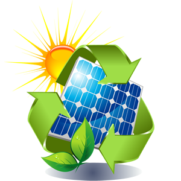

Copyright 2015 Proyecto TIC2 Fuentes de Energias Renovables.
Conclusiones |
|  | Después de realizar este trabajo, llegamos a la conclusión de que hay que tener en cuenta varios puntos o conceptos importantes para tener una idea clara sobre el tema. Lo primero que consideramos, es que hay que fomentar el uso de la energía mareomotriz, como así también contar con el uso de todas las energías limpias o alternativas, como la solar y la eólica, entre otras; lo más importante de este punto es terminar de una vez por todas con el uso de combustibles fósiles.
|
|
Hemos de concluir, en primer lugar, que es necesario plantearse un cambio en el sistema energético actual para eliminar la gran dependencia que éste tiene de los combustibles fósiles y los problemas que ello trae consigo:
Existen alternativas tecnológicas disponibles para el aprovechamiento de la energía solar que pueden permitir la diversificación de las fuentes de energía. El principal inconveniente que se opone a la utilización a gran escala de estas energías renovables es de tipo económico. |
Sin embargo las energías renovables presentan unas ventajas que resuelven problemas del sistema energético actual :
Concretamente la ciudad de Jaén y para el sector de edificios se ha estudiado su potencial solar, y se han obtenido una serie de recomendaciones para la introducción de las energías renovables. Entre estas recomendaciones ocupa un primer lugar, por sumar la competitividad económica a todas las demás ventajas de las energías renovables, la instalación de paneles solares para obtención de agua caliente domestica. |
|
|
No hay que olvidar, sin embargo, otras
tecnologías como la fotovoltaica que pueden suponer un cambio mas
importante en el escenario energético, y que de momento con acciones
puntuales pueden ayudar a su desarrollo tanto tecnológico como de
mercado.
|
Aunque para conseguir estos esfuerzos es
imprescindible el apoyo de los gobiernos y la administración, no hay que
olvidar que dado el carácter de estas tecnologías y el modelo de
desarrollo que propician, las pequeñas actuaciones de instituciones
locales y provinciales, de grupos, asociaciones, etc... e incluso las de
tipo particular o privado, juegan un papel fundamental en le desarrollo
de las energías y en su contribución al desarrollo socio-económico de la
zona. |
|
Copyright 2015 Proyecto TIC2 Fuentes de Energias Renovables. |
|
|
|